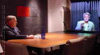
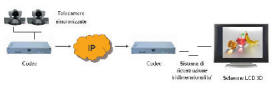

L’evoluzione della videoconferenza verso la
telepresenza e il 3D
Il mercato della videocomunicazione, i
player principali e le ultime tendenze. Tecnologie che consentono alle
aziende di migliorare in efficienza e competitività.
di
Andrea Bucciarelli
Approdavo verso l’aeroporto accompagnando un amico in viaggio di
lavoro, già stressato dall’intasamento di raccordi e tangenziali e
ripercorrevo mentalmente le ragioni degli spostamenti delle persone e
delle idee. Perché ero lì, perché lui era lì, in una trasferta che per
due ore di riunione aveva avuto un pesante costo logistico organizzativo
tra auto, taxi, aerei, hotel, ristoranti, senza contare lo stress, i
tempi morti e l’impatto ambientale in CO2 e polveri sottili
emesse.
Non sono tempi da euforia di trasferta, il business è sempre più
difficile, il vantaggio competitivo si nasconde in una sfumatura
impercettibile, a volte non si sa neanche perché si parte e sovente si torna
a mani vuote. Nell’intercontinentale per molti morta definitivamente
l’ubriacatura della classe business e del giaciglio a 5 stelle.
Ci si muove o si parte perché si vuole uscire dall’ufficio, certamente
perché in alcuni casi il contatto diretto è più efficace, diretto ed intimo
di quello virtuale. Per evitare lo spostamento il più delle volte non
necessario rinunciando al contatto reale e per alcuni all’indennità di
trasferta, sempre possano essere comparabili remunerazione e qualità della
vita, il manager deve essere arciconvinto dell’efficacia del sistema. I
latino mediterranei si muovono di più incoraggiati dal clima, gli
anglosassoni e gli scandinavi molto meno e questo spiega in parte l’enorme
sviluppo storico di alcuni vendors come Ericsson e Nokia.
Dopo la comunicazione audio e dati su reti separate, l’interesse per la
video è andato consolidandosi negli ultimi 10 anni, di pari passo alla
Convergenza ed alla Larga Banda su fisso e mobile. La videocomunicazione ha
inizialmente tentennato anche sul target elitario ma già dall’infrastruttura
ISDN H.320 è stato un crescendo evolutivo delle VPN IP che rispetto all’ISDN
presentano gli indiscussi vantaggi del digitale, evitando la costrizione di
punti di accesso dedicati, favorendo minori jitter e ritardi, permettendo un
minor costo di banda.
Gli attuali 1,2 BUSD di business mondiale sulla videoconferenza con una
crescita annuale CAGR del 20 %, sono principalmente intercettati dai colossi
del settore Polycom, Tandberg, Sony, Aethra. Fra questi Aethra è l’unica
realtà italiana da 35 anni leader nella Videocomunicazione e nelle
Telecomunicazioni. Oltre all’indiscussa capacità tecnologica, si distingue
per lo stile ed il design dei sistemi ed è l’unica nel panorama mondiale, ad
offrire Managed Services Audiovideo con soluzioni complete
sistemi-traffico-servizi anche in leasing operativo o finanziario.
I Sistemi di Videoconferenza rigorosamente nella fascia business, sono
stati ritagliati sulla necessità delle persone che nella normale attività
collaborano in aggregazione (Sistemi di Gruppo) o individualmente
(Executive, Videotelefoni come l’innovativo Maia XC di Aethra, PC, Mobile)
per target di mercato Large Enterprise, PMI, PA, Verticali.
Le macro tendenze di sviluppo si stanno pertanto concentrando verso due
scenari, Sistemi di Gruppo per Room Videoconferencing e Sistemi Individuali
per Desktop Videoconferencing, entrambi convergenti nel concetto di Unified
Communication dove su unica piattaforma magari Microsoft OCS2007, si ha la
libertà di scegliere connessione e modalità di aggregazione singola o di
gruppo da postazioni fisse, nomadiche o mobili.
Sistemi di Gruppo, Executive,
Personal - Fonte Aethra
I grandi stanno continuando ad investire sui Sistemi di Gruppo e sugli
Executive, migliorando sempre più il concetto di "presenza virtuale" che
alla fine convince all'uso della videoconferenza come deterrente primario
per non spostarsi, assieme ad altri fattori da sempre critici come
semplicità d'uso, affidabilità, efficienza spettrale nel mantenere una buona
qualità audiovideo ottimizzando la banda.
Il miglioramento qualitativo è storicamente passato per la Risoluzione
Standard e High Definition (QCIF, CIF, 4CIF, HD 720p, HD 1080i/p), per i
Protocolli di trasporto IP (H.323, SIP), per la Codifica (H.261 - H.263 - H.264),
per la capacità di elaborazione dei fotogrammi al secondo (25 fps, 30 fps,
60 fps), per la contemporaneità di immagini e documenti sui due flussi del
Dual Video (H.239), per l’Audio Wideband (14 KHz, 22 KHz), per la
collaborazione Multipunto anche in Continuous Presence. La banda necessaria
dipende dalla qualità che si vuole ottenere in un compromesso tra
Risoluzione, Efficienza spettrale di Codifica, Frame al secondo.
Già da tempo i PC con webcam possono videocollegarsi con i Sistemi di
Gruppo VPN anche in H.239 a patto che da qualche parte nella rete esista una
MCU Multi Conference Unit stand alone o SW embedded come Hydra di Aethra,
pertanto con una certa capacità nel numero di connessioni remote,
sufficiente per segmenti PMI. Niente a che vedere con Skype che è un
punto-punto di bassa qualità per uso amichevole familiare. Almeno per il
momento.
Alcuni piccoli si stanno definitivamente focalizzando sulla
Videoconferenza PC Desktop, e tra questi Vidyo propone Videoconferenza di
alta qualità anche Telepresenza HD su reti IP generiche come Internet, senza
più la necessità di architetture VPN MCU centriche. Sostituendo il
tradizionale H.264 / AVC Advanced Video Coding con un applicativo definito H.264
/ SVC Scalable Video Coding su piccoli gateway e router proprietari,
adattano qualsiasi Sistema di Gruppo - Executive - PC a trasmettere su
Internet, eliminando di colpo la costosa infrastruttura video costituita da
MCU, Gateway, Gatekeeper. Un rivoluzione in teoria, considerando che
Internet è da sempre non adatta per la Videoconferenza di qualità
professionale per l’asimmetria, l’elevata sensibilità agli errori, la
mancanza di CBR Constant Bit Rate.
La Webconferencing di alta qualità sta togliendo il sonno ai fornitori
tradizionali d’infrastruttura come Codian acquisita da Tandberg e Radvision
che comunque con un fatturato ancora in crescita, si difende bene
presidiando mercati evoluti ed emergenti.
La Telepresenza non è standardizzata, continua a far leva sull’efficacia
psicologica della fedeltà di riproduzione visiva, in un ambiente audiovideo
immersivo spaziale di alta qualità. Le tecniche d’immersività spaziale
possono essere applicate sia ai Sistemi di Gruppo che agli Executive e la
risoluzione SD HD dipende dai codec e dalle telecamere integrate.
Le configurazioni di fascia alta sono costituite da piccoli anfiteatri
multiscreen, array sincronizzati di telecamere, microfoni ed altoparlanti,
lifesize con dimensione reale delle persone sullo schermo, eye contact con
sguardo diretto correggendo quella fastidiosa parallasse tra telecamera e
schermo, stesso mobilio concordato per avere l'impressione di essere con le
persone remote nella stessa sala. Gli aspetti psicologici costituiscono un
fattore importante: espressioni, gesticolazione, posture, veicolano il
messaggio molto più efficacemente mentre il contatto visivo in una riunione
rende più convincenti, sinceri, autorevoli.
La Telepresenza di fascia alta è estremamente costosa anche di due ordini
di grandezza rispetto ai Sistemi di Gruppo tradizionali, richiedendo una
banda minimo di 4 Mbps. Forse troppo anche per le sale di presidenti,
amministratori delegati e ministri. Alcuni giganti come HP e Cisco non erano
presenti nel segmento tradizionale anche se Cisco da tempo presenta una
potente offerta di Unified Communication. Fiutando il business hanno puntato
direttamente sulla Telepresenza e probabilmente stanno portando la croce di
una market share che stenta a decollare. La tendenza attuale è quella di
integrare tecniche di Telepresenza in Sistemi HD più compatti a singolo
schermo e molto meno costosi come Electra di Aethra.
|
Telepresenza - Fonte Cisco |
Telepresenza - Fonte HP |
La tridimensionalità nella Videocomunicazione con applicazioni di sicuro
interesse nella Telemedicina, nell’Industria, nel Commercio, nella
Teledidattica e nell’Intrattenimento, rappresenta l’ultima frontiera della
virtualizzazione. Per certi aspetti potrebbe superare la Telepresenza ed ha
seguito solo parzialmente l’evoluzione del 3D riprodotto localmente, tutt’ora
ampiamente sperimentale. Un conto è un broadcasting trasmesso
unidirezionalmente o la tridimensionalità preelaborata e riprodotta
localmente per applicazioni pubblicitarie, commerciali, entertainment,
infotainment. Altra cosa è elaborare, trasmettere e ricostruire immagini 3D
in tempo reale. Per le applicazioni locali si parte sempre da riprese con
più telecamere, complesse elaborazioni e riproduzioni con sistemi ottici o
olografici su totem ancora invasivi.
Il 3D nella Videoconferenza ha pertanto seguito finora una filosofia
d’integrazione e compatibilità con i sistemi tradizionali esistenti, codec e
telecamere SD HD, utilizzando metodi ottici con un’ unica telecamera. DVE
Digital Video Enterprises e Telepresencetech utilizzano metodi ottici basati
su proiezioni, vetri e riflessi, ottenendo immagini tridimensionali decenti
ma con sistemi tutt'ora ingombranti ed accorgimenti tipo luci e sfondi
cinematografico-televisivi non molto pratici.
|

Videoconferenza 3D con sistemi ottici -
Fonte DVE |

Videotrasmissione 3D
stereoscopica - Fonte 3DSwitch |
Promettente risulta l’applicazione della stereoscopia, tecnica nota da
decenni nel cinema e nell’entertainment IMAX 3D, che consiste nella ripresa
video o fotografica di due telecamere o macchine fotografiche sincronizzate.
La ripresa con immagini sovrapposte, viene separata da filtri polarizzatori
diversi per ognuno degli occhi e rielaborata dal cervello che percepisce
profondità e tridimensionalità.
L’italiana 3DSwitch leader nello studio e nelle applicazioni 3D
stereoscopiche, coinvolta in progetti di rilievo come la TV3D e
collaborazioni con Eutelsat e Telespazio nel DVB Digital Video Broadcasting,
sta sperimentando sistemi integrati di Videoconferenza 3D con due sole
telecamere sincronizzate, trasmissione codec, sistemi di ricostruzione della
tridimensionalità dai flussi video trasmessi, schermo LCD 3D con
polarizzazione circolare ed eleganti occhiali con montatura in titanio. Il
sistema complessivo garantisce un’ottima risoluzione 3D. Gli schermi LCD 3D
autostereoscopici appena lanciati sul mercato senza polarizzazione ed
occhiali, oltre alla complessità di trattare il content da più telecamere,
sullo strato esterno dello schermo sono dotati di microlenti cilindriche che
distribuendo l’immagine in più direzioni, ne riducono sensibilmente la
risoluzione.
Analogamente alla Telepresenza, la tridimensionalità stereoscopica puo’
essere implementata sia su SD che HD a seconda dalla risoluzione delle
telecamere, degli schermi HD 720p 1080p, dei codec. Nel caso di trasmissione
3D HD in tempo reale, debbono ancora stabilizzarsi parecchi fattori per
poter individuare business case sostenibili, il consumo di banda correlata
alla risoluzione ed ai frame per secondo, l’efficienza spettrale e la
capacità dei codec, elaborazione tridimensionale e sincronismo.
Futuro prossimo.
Saluto il mio amico che dopo il check-in s’inserisce in una coda
chilometrica di vestiti lino cotone stropicciati dalla giornata lavorativa,
tutt’altro che virtuale. Anche a me toccherà almeno un’ora di raccordo
otturato di cui non apprezzerò la tridimensionalità. Lo vedo sorridente
all’orizzonte mentre sparisce ingoiato dal controllo dei raggi X.
2-Giu-2008
© 2008 - Eccellere - Business Community
|